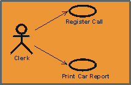
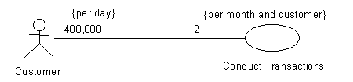
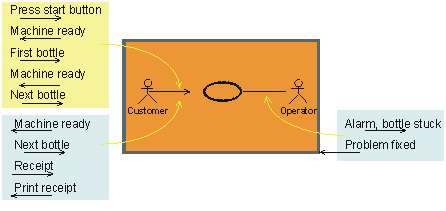

| Рекомендация: Ассоциация связи |
 |
|
| Связанные элементы |
|---|
ОбъяснениеВарианты использования и субъекты взаимодействуют посредством отправки сигналов друг другу. Для обозначения таких взаимодействий используется понятие ассоциации связи между вариантом использования и субъектом. У варианта использования может быть не более одной ассоциации связи с конкретным субъектом, а у субъекта - не более одной ассоциации связи с конкретным вариантом использования, независимо от числа передач сигналов между ними. Полная сеть таких ассоциаций - это статическая картина взаимодействия между системой и ее средой. Ассоциациям связи не присваиваются имена. Поскольку между вариантом использования и субъектом может быть только одна ассоциация связи, для определения конкретной ассоциации связи достаточно указать ее начальную и конечную точки.  Линия или стрелка между субъектом и вариантом использования указывает, что они взаимодействуют посредством обмена сигналами. РолиКаждый конец ассоциации связи - это роль, которую вариант использования или субъект играет в ассоциации. Роли служат для указания множественностей и направлений ассоциации (см. ниже). МножественностьКаждая роль ассоциации связи указывает множественность ее типа, т.е. число экземпляров этого субъекта или варианта использования, которое можно связать с одним экземпляром другого варианта использования или субъекта. Множественность задается текстовым выражением в роли. Выражение - это список перечисленных через запятую диапазонов целых чисел. Диапазон задается целым числом (нижним значением), двумя точками и другим целым числом (верхним значением); отдельное целое число задает допустимый диапазон, а символ '*' означает "много", т.е. неограниченное число объектов. Отдельный символ '*' эквивалентен диапазону '0..*', т.е. произвольному неотрицательному целому числу; это значение по умолчанию. Множественность необязательной скалярной роли равна 0..1. Множественность может быть дополнена ограничением по времени. Это позволяет указать, сколько экземпляров могут быть связаны, возможно разными экземплярами, в течение заданного периода. Эта информация полезна, поскольку сообщает, часто ли выполняется вариант использования и насколько часто каждый экземпляр субъекта задействует вариант использования. Пример: Вариант использования Провести транзакции применяется клиентами 400 000 раз в день. Каждый клиент применяет вариант использования дважды в месяц. ИнициативаУ каждой роли ассоциации связи есть свойство Инициатива, которое указывает, кто инициализирует взаимодействие. Инициатива изображается открытой стрелкой. Если стрелка указывает на вариант использования, то субъект на другом конце ассоциации инициализирует взаимодействие с системой. Если стрелка указывает на субъекта, то система инициализирует взаимодействие с субъектом. Двусторонняя инициатива изображается линией без стрелок (двунаправленные стрелки сделали бы диаграммы слишком громоздкими).  Стрелка связи определяет субъект, инициализировавший вариант использования. Для каждой стрелки связи предполагается наличие ответного сообщения. Линия без стрелок означает двустороннюю связь. Не путайте инициативу с обменом потоками данных; она применяется исключительно для указания инициатора связи. Например, клиентский запрос на получение данных изображается стрелкой, направленной к варианту использования, представляющему систему, несмотря на то, что большая часть данных перемещается от системы к клиенту.
Передача информации от
субъекта к варианту использования
|
© Copyright IBM Corp. 1987, 2006. Все права защищены.. |